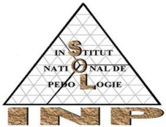

Institut National de Pédologie
Données sur les sols, leur composition, fertilité et utilisation potentielle
Le portail pédologique national du Sénégal est une plateforme en ligne dédiée à la collecte, à l'analyse et à la diffusion d'informations sur les sols du Sénégal. Il vise à fournir des données précises et à jour sur la typologie des sols, leur composition, leur fertilité et leur utilisation potentielle.
Ce portail est un outil essentiel pour les agriculteurs, les chercheurs, les décideurs politiques et toute personne intéressée par la gestion durable des ressources naturelles au Sénégal.
Diversité des solsLa pédologie du Sénégal se caractérise par une grande diversité de sols, fortement influencée par les variations climatiques et géographiques du pays. Une immense majorité du territoire (bassin arachidier, Louga, Diourbel, Thiès) est dominée par les sols ferrugineux tropicaux, essentiels pour l'agriculture traditionnelle.
Le nord sylvo-pastoral (Saint-Louis, Matam) présente des sols bruns subarides et des régosols. En descendant vers le sud (Kolda, Kédougou, Ziguinchor), on observe des sols ferrallitiques, des lithosols et des sols peu évolués.
Les zones côtières abritent des sols hydromorphes, halomorphes (salins) et des vasières, dictant des dynamiques agricoles spécifiques, de la riziculture à la préservation des mangroves.
Portail pédologique national de l'INP
Institut National de Pédologie
Dakar, Sénégal
Institut National de Pédologie — Dakar, Sénégal
Système d'Information Pédologique National
Cliquez sur "Exécuter" puis cliquez sur un polygone de référence sur la carte.